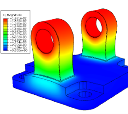
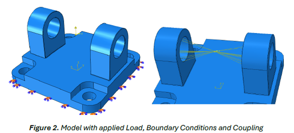
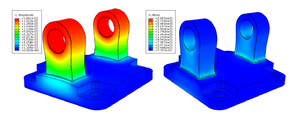
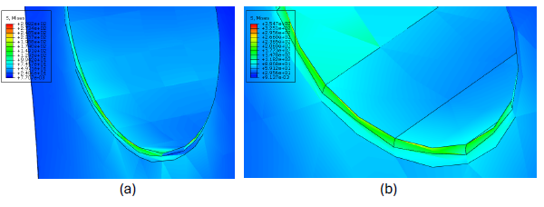
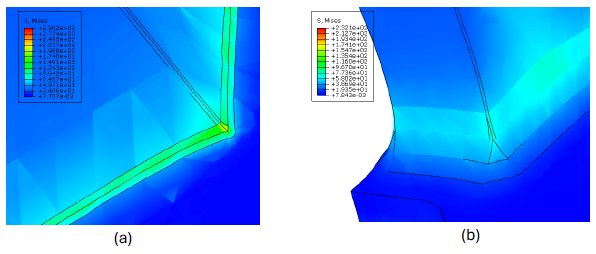

Double-lug clevis joints are widely used to transfer load through a pin or bolt connection. Their geometry naturally introduces local stress concentrations around the bore and at the lug-base transition — areas that can govern yielding, crack initiation, and fatigue performance.
This study used a 3D linear-elastic finite element model to evaluate how two key geometric parameters affect the structural response of a double-lug clevis: bore diameter and lug-root fillet radius.

A 3D deformable solid model was prepared in CATIA V5 and analysed in Abaqus CAE. The baseline clevis used a 64 mm bore and structural-steel material properties: Young's modulus of 210 GPa and Poisson's ratio of 0.3.
The pin load was represented by a reference point positioned at the bore centre, kinematically coupled to the inner faces of both lugs. A total vertical load of 500 kN was applied through this point, while the base was fully constrained to isolate the structural response of the lugs.
This simplified rigid-pin coupling intentionally avoided explicit pin–lug contact, allowing the study to focus on the comparative effects of geometry while retaining a physically meaningful global load path.
The clevis was meshed with C3D10 quadratic tetrahedral elements using curvature-based refinement. This concentrated mesh density at the bore surface and lug-root fillet, where high stress gradients were expected.
Mesh sensitivity was assessed across models ranging from approximately 3,400 to 185,000 elements. Displacement stabilised early, while peak stress required greater refinement due to the sharper stress gradients at the fillets.
A mesh containing 67,230 elements was selected as the best balance between computational cost and accuracy. The change in maximum stress between this mesh and the finest model was approximately 1.8%, satisfying the adopted 3% convergence criterion.
For an additional sanity check, a nominal-stress calculation produced a value of approximately 80 MPa. This sat below the FEA peak stress, as expected for a geometry containing stress-concentrating features, while remaining consistent in order of magnitude with the distributed stress field.

The baseline configuration used a 64 mm bore and a 1 mm lug-root fillet. The deformation contour showed symmetric upward displacement around the bore, matching the expected load path generated by the central kinematic coupling.
Von Mises stress contours identified two dominant concentration regions: the lower inner edge of the bore and the lug-base corners. A high-stress band extended from the lower bore ligament into the fixed base, clearly revealing the principal force-transfer path through the component.
The result also highlighted the limitation of the simplified loading method: explicit contact was not modelled, so the upper bore rim did not develop the contact pressure peak expected in a fully resolved pin–lug interaction.
Bore diameter was varied from 64 mm to 48 mm and 32 mm while retaining the 1 mm fillet radius. Reducing the bore increased maximum vertical displacement from 0.0166 mm to 0.0220 mm — approximately a 32% increase.
Although peak stress remained broadly similar at 222–226 MPa because the lug-root fillet remained the dominant peak-stress location, distributed stress around the bore increased as the bore became smaller.
The 95th-percentile von Mises stress increased from 49.6 MPa to 56.8 MPa, showing that a smaller load-transfer area increases the broader stress level even where it does not create the absolute peak stress.


The lug-root fillet radius had the clearest influence on the maximum stress. Increasing the radius from 1 mm to 10 mm and then 20 mm progressively smoothed the load path at the lug-base transition.
This represents an approximately 33% reduction in peak von Mises stress. The larger fillet also reduced displacement slightly, from 0.0166 mm to 0.0154 mm, indicating a stiffer and smoother load-transfer route from the bore into the base.
This made lug-root fillet sizing the most effective geometric design lever identified in the study for reducing stress concentration without changing the bore capacity.
The investigation demonstrated a complete finite element workflow: geometry preparation, constraint and load definition, mesh verification, analytical benchmarking, post-processing, and parametric design comparison.
The results showed that bore diameter influences distributed stress and displacement, but the lug-root fillet radius governs the largest local stress concentration. Increasing the fillet radius is therefore the most effective route to reduce stress concentration and improve the component's likely durability.
Future work would introduce explicit pin–lug contact, nonlinear material response, and cyclic loading to assess plasticity and fatigue life under representative service conditions.
The complete report includes model assumptions, mesh sensitivity data, parametric results, and full FEA contour outputs.
↓ Download Full Report (PDF) ← Back to Modules